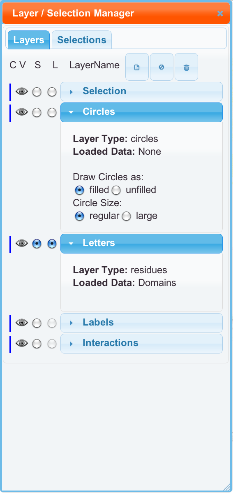

We now have a concept of a layer, similar to how adobe illustrator does it. You can open the layer panel by clicking on the top button in the right side toolbar. The layers can be dragged around to any order that you like. They will show up in the left in that order, and they will be saved to SVG/PDF in that order. Layer properties like name and color can be edited by double clicking their name.
Layers have four properties right now. Each layer can be visible/hidden, can be made the selected layer, or be made the linking layer. Layers also have a color associated with them. Right now, that color only effects the 1D Panel. The linking layer controls which layer the colors for the 3D structure come from. By default, hidden layers are not being exported. This setting can be changed in Save Figures.
You can delete layers, but this is not recommended. You can add new circle type layers and eventually any type of layer. The column of "V" checkboxes controls if that layer is visible. Unchecking it will hide that layer from the left side, and maybe hide it in the SVF/PDF/PNG if that option is set. The first column [S] of "S" radio buttons controls which layer is currently selected.
We have a concept of layer types, and these are not currently changeable. You can only add new circle type layers, so if you delete another type, you can only get it back by refreshing the page. Be careful with the delete button. Data can be graphed into the residue layer (default name Letters). This will change the color of the letters and change the color of the rRNA in Jmol, if the residue layer is set to linking. Data can also be graphed into circle layers. This places colored circles on the map. Those circles can be filled or unfilled, and regular or slightly larger size. Click on a layer name to reveal these options. The color of lines in Interactions can be linked to any residue or circle layer.